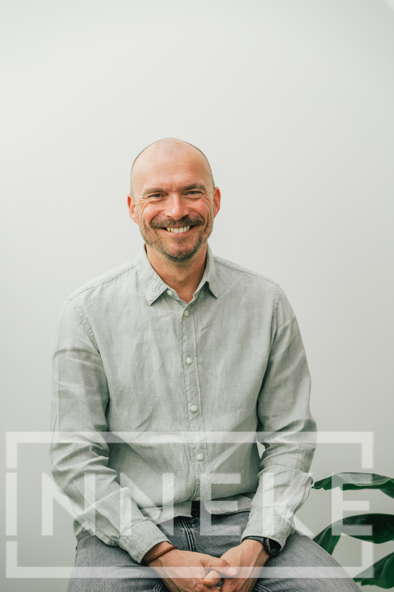

Leadership & Organisatie
Stroom‑Consultancy — Brengt beweging in leiderschap, teams en organisaties.
Verandering vraagt meer dan nieuwe processen. Het vraagt stroom.
Stroom in mindset. Stroom in gedrag. Stroom in samenwerking.
Wij begeleiden leiders en leiderschapsteams om net dat te creëren:
duurzame verandering die voelbaar blijft, ook wanneer het moeilijk wordt.
Bij Stroom‑Consultancy werken we op het kruispunt van menselijke transformatie en procesoptimalisatie.
Want pas wanneer gedrag, mindset en structuur elkaar versterken, ontstaat echte vooruitgang.

Onze diensten
Wat we doen.
Mindset & Behaviour Change
Verandering start in het hoofd en wordt werkelijkheid in gedrag. We helpen leiders en teams:
- vastgeroeste patronen te doorbreken
- veerkracht en eigenaarschap te versterken
- communicatie en samenwerking te verbeteren
- nieuwe gewoontes te installeren die verandering versnellen
Leiderschapsontwikkeling voor álle niveaus
We coachen en begeleiden:
- CEO's die richting geven aan transformatie
- Leadership teams die hun collectieve kracht willen versterken
- First line leaders die dagelijks impact maken op medewerkers
- Change managers en projectleiders die verandering waarmaken, niet alleen plannen
Procesoptimalisatie die werkt omdat mensen meebewegen
Nieuwe processen blijven alleen bestaan als mensen ze wíllen volgen. Daarom combineren wij:
- analyse van je bestaande processen
- concrete optimalisatievoorstellen
- begeleiding van de teams die ermee moeten werken
Niets verandert… totdat mensen veranderen.